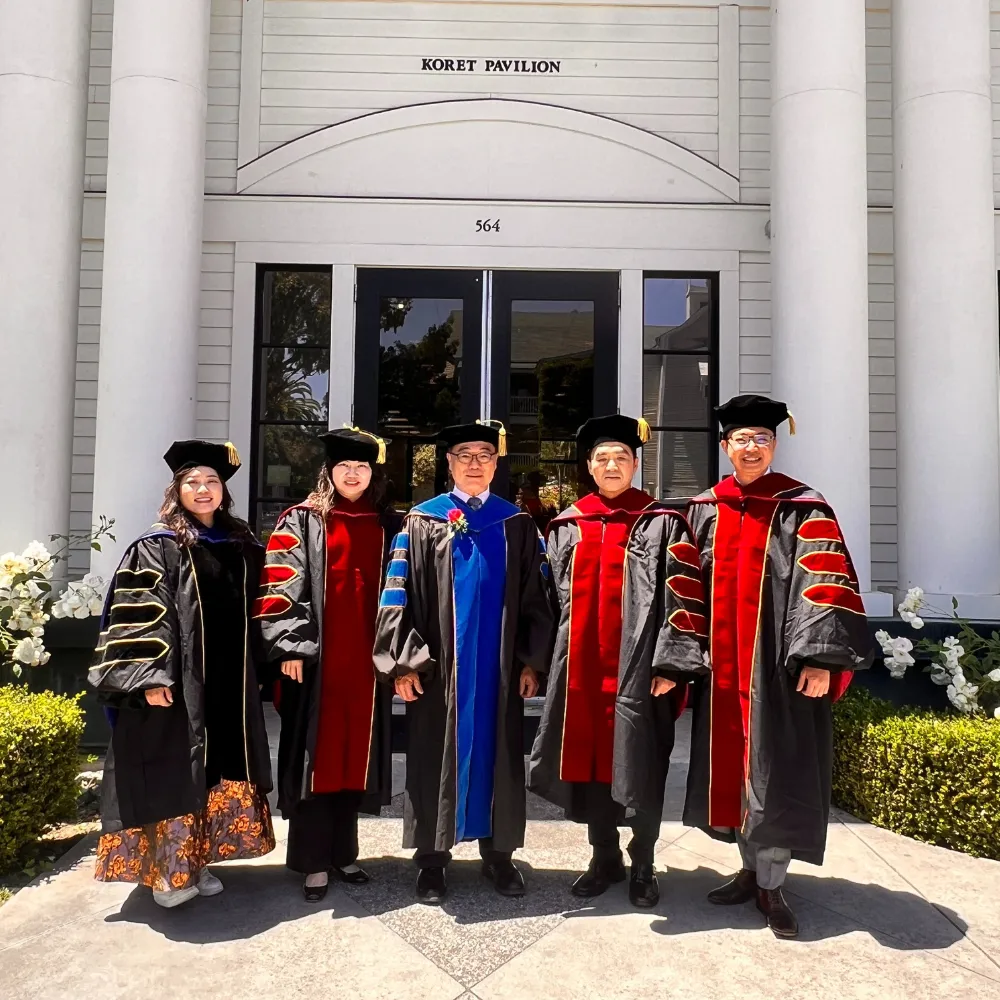
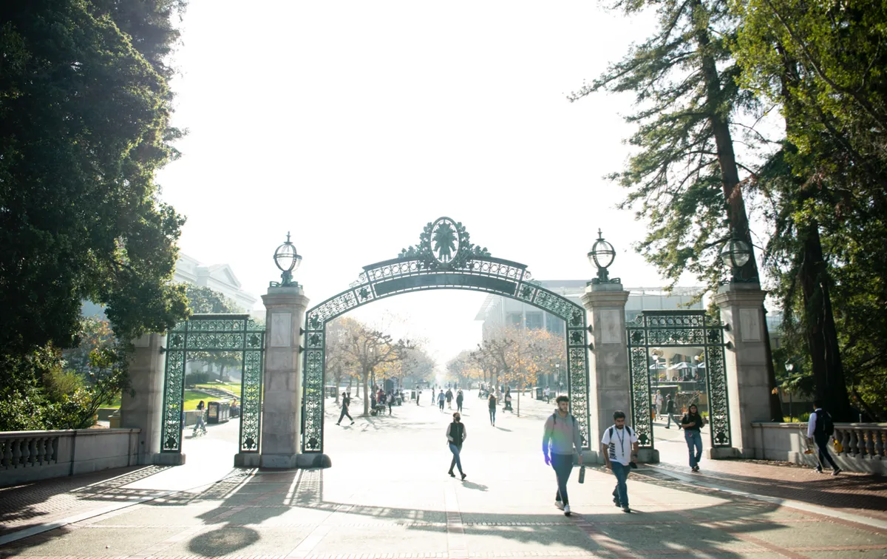
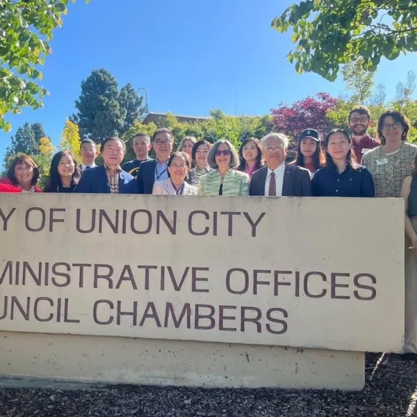
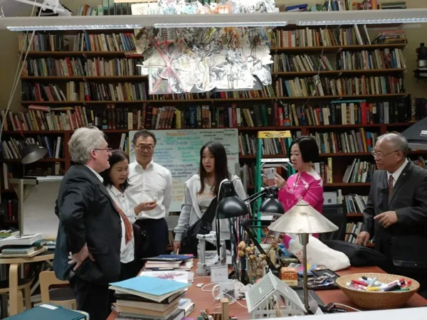
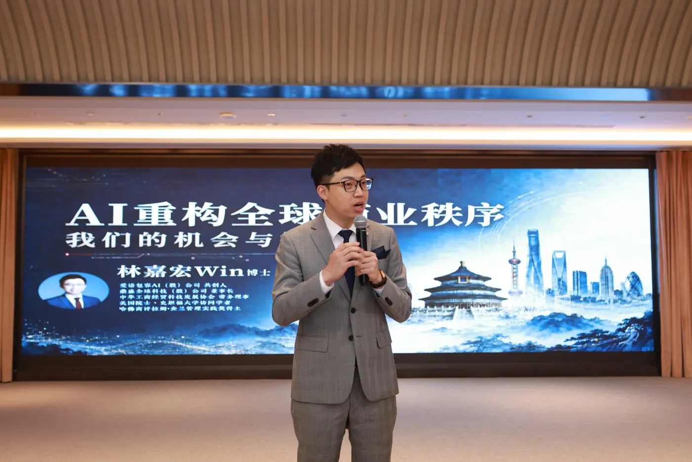
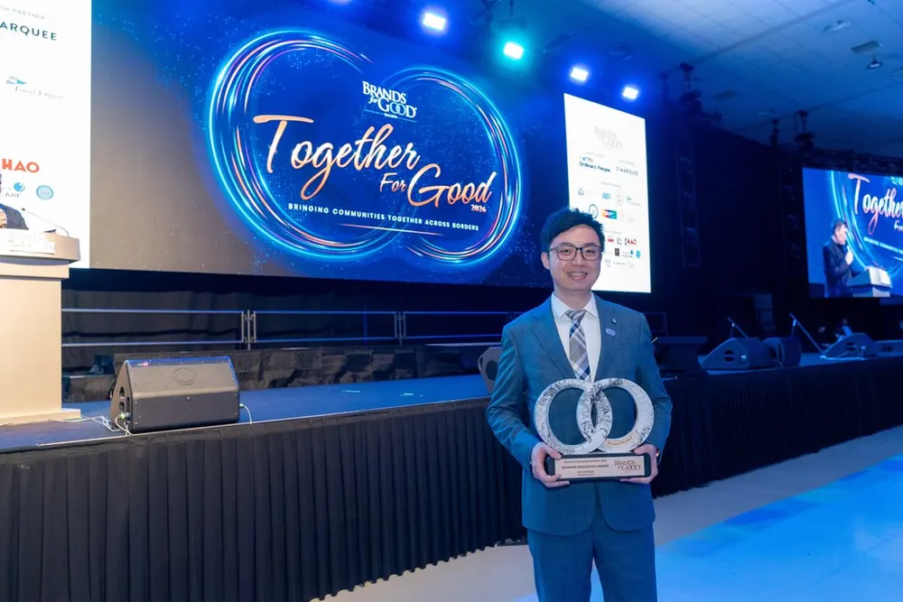
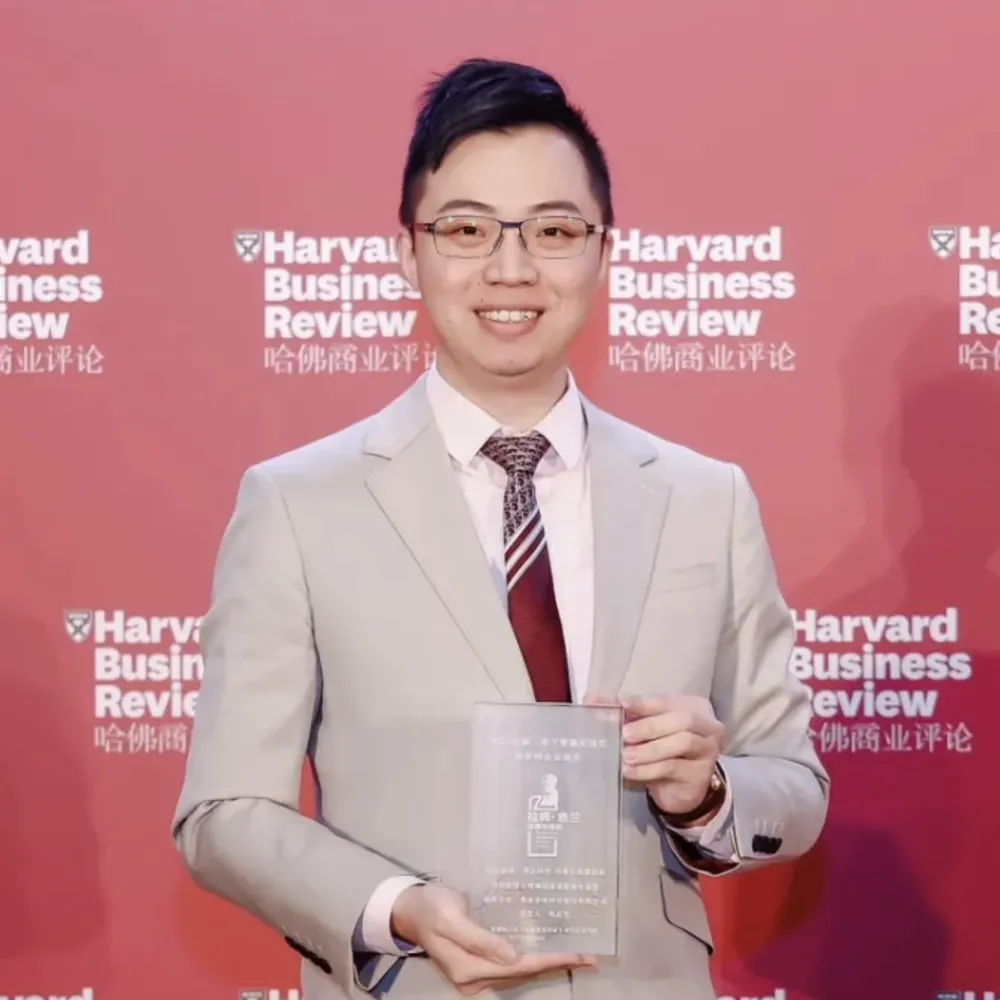
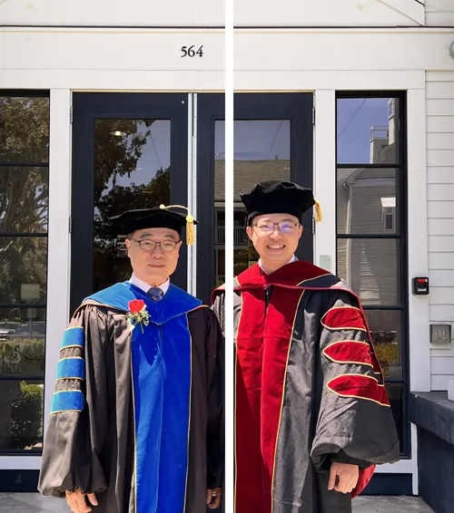

黃仁勳Jensen Huang
NVIDIA 創辦人暨執行長
「你不會被 AI 搶走工作，但你會被懂得使用 AI 的人搶走工作。」
“You’re not going to lose your job to an AI, but you’re going to lose your job to someone who uses AI.”
8 個月，跟史丹佛、柏克萊、加州州立大學教授與矽谷科技企業高層上課。
以你的公司為題做一份 AI 企業專題，把矽谷的 AI 決策思維帶回去。
美國矽谷研究院與三校合作的企業家《博士後暨訪問學者》進修計畫
線上直播 8 個月＋選配美國校園 7 天 6 夜結業之旅
2027 第 9 期・3 月開學｜滿 12 人即開班
創新企業與卓越人才獎學金：原則上 11 月底前送件適用

AI 讓知識變便宜，
讓判斷變昂貴。
AI 正在改寫產業規則，全球市場也在重新洗牌。很多企業主卡住的，其實是這四件事：
導入路線怎麼排、團隊怎麼跟 AI 分工、資料與法規風險誰來把關——這些查不到標準答案，只能靠經營者自己判斷。
想掌握矽谷最新的商業模式、技術與資金動向，卻一直站在核心圈外，找不到敲門磚。
身為決策者，不可能放下公司出國讀兩三年。難道只能跟世界頂尖學府擦身而過？
碩士與 EMBA 已是許多經營者的基本配備。你的名片上，還能用什麼呈現國際學術經歷？
這個計畫，就是為這四個問題設計的。
8 堂課，帶你看懂 AI 導入、行銷、法規與產業版圖的變化；一份 AI 企業專題，把答案落實在你自己的公司。不需離職、不需長住美國、免語言成績。
工具人人都有，差別在誰用得好。
「你不會被 AI 搶走工作，但你會被懂得使用 AI 的人搶走工作。」
“You’re not going to lose your job to an AI, but you’re going to lose your job to someone who uses AI.”
「會有更多人能創作軟體與藝術，而世界需要的還多得多；但只要專家擁抱新工具，他們大概仍會遠勝新手。」
“A lot more people will be able to create software, and art. But the world wants a lot more of both, and experts will probably still be much better than novices, as long as they embrace the new tools.”
「如果現在要我對一群大學生說話，我會告訴他們：把這些 AI 工具練到極度、不可思議地熟練。」
“If I was to talk to a class of undergrads right now, I’d be telling them to get really, unbelievably proficient with these tools.”
「重點不再是資淺或資深，而是『會用 AI』還是『不會用 AI』。」
“It’s not about junior vs senior, it’s about ‘good with AI’ vs ‘not good with AI.’”
對經營者來說，「用得好」不是學會每一個工具，而是知道 AI 該放進公司的哪個環節。接下來 8 個月，就是要找出這個答案。
美國正全力推進 AI 與製造業的雙重創新，全球產業版圖也在重組。這些變化，最後都會落到同一個問題：你的公司要站在哪裡？
走進矽谷與頂尖科技企業，看最前沿的商業與技術戰略怎麼形成。
跟頂尖學者學最新的管理理論，以及用數據做決策的方法。
跟美國名校教授面對面，重新檢視你的全球戰略與領導方式。
連結美國與亞洲的企業菁英，建立你的國際商業合作網路。
這個計畫由三所名校與美國矽谷研究院合作，帶你從源頭理解 AI 與創新。
 STANFORD
STANFORD史丹佛大學位於美國加州矽谷的核心，是世界領先的私立研究型大學，以創新和卓越聞名全球。校友創辦的 Google、Yahoo、惠普、NIKE 等企業，資金合計相當於全球第十大經濟體系，具備極高的學術聲譽和產業影響力，是企業家和創新者的搖籃。

UC BERKELEY加州大學柏克萊分校是全球頂尖的公立研究型大學，擁有全美最多頂尖研究課程，並產生過 72 名諾貝爾獎得主。它是創新和科學發展的先驅，並以其在環境科學、電腦科學、人工智慧等領域的突破性研究而享譽國際。
 CSU MONTEREY BAY
CSU MONTEREY BAY加州州立大學是美國最大的公立大學系統之一，提供超過 1,800 種學位課程，涵蓋 240 多個專業領域。學校與全球 100 多個國家合作，致力於多元化和全球化的教育模式，是商業和學術人才的最佳選擇。本計畫由蒙特雷灣分校 CSU Monterey Bay 參與授課。
本計畫承辦單位與三校合作開設研究中心專案，邀請矽谷大型科技企業高層授課，並舉辦全球學術論壇，讓學員有發表研究成果的舞台。
＊排名依 US News 世界大學排名。本頁不使用任何學校校徽或商標。
8 堂課由史丹佛、柏克萊、加州州立大學各派 2 位教授主講，另外 2 堂由矽谷研究院邀請矽谷科技企業高層主講。
Innovation Research and Entrepreneurship
授課：Dr. Eric Tao（CSUMB）
Getting to Wow + Leadership in Modern Firms
授課：Bill Reichert（Berkeley）
Financing for Startup
授課：Dr. Christina Zhang（CSUMB）
Global Emergent Technologies
授課：Dr. Ling Zong（矽谷 IBM）
Design Thinking in Silicon Valley
授課：Dr. Barry Katz（Stanford）
Competitive Marketing
授課：Dr. Patricia (Patty) Wiggin（矽谷）
Startup Management and Funding in Silicon Valley
授課：John Kelley（Stanford）
Global Economics
授課：Dr. Martha Olney（Berkeley）
每堂課 3 小時，搭配學術期刊寫作。每一堂學到的，都可以直接放進你的 AI 企業專題。
＊AI 方向為建議主題；實際課程、講師與順序以校方正式入學通知為準。
8 堂課的授課師資，橫跨學術、創投與矽谷實戰。2027 年師資以校方公告為準。
任教於史丹佛大學與加州柏克萊大學，全球 20 億美元創投 Pegasus 合夥人，專注 AI、量子計算等深度科技投資；曾帶領 2 家公司上市，哈佛大學及史丹佛商學院傑出校友。
主講：Getting to Wow＋現代企業領導力
史丹佛大學教師、史丹佛醫學院 SPARK 創新計畫顧問；史丹佛法學博士，專研 AI 與法律，教授矽谷創新、後碳經濟；OnRisk, Inc. 共同創辦人兼 COO。
主講：矽谷新創管理與資金

美國矽谷研究院顧問暨講者，專長新興科技（Emergent Technology）與科技創投（Tech Venture）；University of Hawaii。
主講：全球新興技術
美國矽谷研究院院長兼董事長；加州州立大學電腦科學及創新終身教授；曾擔任美國三所大學校長；美國聯邦政府支持之區域創新與經濟發展中心教授；發表超過 40 篇學術論文，長期深耕教育、科技、創新與創業領域。
主講：創新研究與創業
講授「設計思維」，帶你理解矽谷產品創新的思考方式。
主講：矽谷設計思維

12 年 MBA 教學經驗，曾任西門子（Siemens）高層、領導跨國團隊；專精領導力發展、組織變革、情緒智商（EQ）與競爭性行銷策略。美國矽谷研究院顧問暨董事。
主講：競爭性行銷

美國矽谷研究院講者，專長新創融資（Startup Financing）與公司治理（Corporate Governance）；Tulane University A.B. Freeman School of Business。
主講：新創融資

美國知名總體經濟學家與經濟史學家，曾任教於史丹佛大學；榮獲柏克萊傑出教學獎、Phi Beta Kappa 卓越教學獎，著有《Macroeconomics as a Second Language》，擔任美國經濟協會（AEA）委員會成員。
主講：全球經濟學
AI 時代企業的新藍圖、矽谷教授怎麼連結你的企業轉型、訪問學者和學位差在哪——聽完，再決定要不要往下談。
全球產業轉移下，競爭怎麼重新定義？以及歷屆學員如何走進美國產官學界與矽谷企業參訪。
史丹佛大學 Barry Katz 的「設計思維」、Bill Reichert 的「企業領導力」，以及 IBM 高層分享的「全球新興技術」趨勢。
為什麼越來越多企業主選擇「訪問學者」或「博士後研究」，而不是再讀一個博士或 MBA。
還有疑問？直接跟國際招生顧問一對一聊。
預約一對一諮詢 →以你的產業與公司為題，從 AI 在企業管理中的應用、數據驅動決策、企業國際化策略等方向切入。
教授與商業導師全程陪伴。課程包含研究方法與學術期刊寫作，兼顧學術價值與商業應用；學期間可預約教授一對一指導。
在矽谷研究院全球學術論壇／專題研究發表會，發表你的研究成果。
訪問學者與博士後學員於結業後一年內發表國際期刊，可再取得加州州立大學頒發的第 4 張證書，論文題目會載明在證書上。

網路直播班還是實體校園班？國際招生顧問會依你的時間與目標，一對一說明方案、獎學金和上課方式。
預約一對一諮詢 →安排美國產、官、學、研界的參訪與交流。以下兩種行程分開報名。
美國矽谷研究院（SVRI）主辦的總裁研習認證班：史丹佛教授與矽谷企業領袖授課，主題涵蓋 AI 與前沿科技趨勢、Design Thinking 設計思維、創新領導與未來決策；含史丹佛校園參訪、Arrillaga Dining Commons 校園午餐、創業生態體驗與國際交流。
每年 10 月底舉行，學員可赴美參加：史丹佛、柏克萊校園課程、產官學參訪交流、全球學術論壇成果發表與結業典禮（行程安排與費用另計）。
7 天，把課堂上的 AI 與創新，帶到現場看。
＊實際課程與行程規劃依照校方正式入學通知為準
歡迎晚宴、頂級企業家與學者破冰交流、行前說明會：計畫導師介紹、學習目標設定、學員商務交流
史丹佛大學開課典禮、高階領導力課程、產業前沿學術研究、AI與未來商業模式等頂尖課程、矽谷企業家交流
國際戰略與政策研究、國際科技與投資研究、矽谷高層企業家私享晚宴、創新與創業對談
Union City 市政廳訪問、美國政府與企業政策解析、全球頂級學術環境與文化體驗、數位行銷與組織領導力
Apple Park、NVIDIA、Google、電腦歷史博物館，深入參訪、交流矽谷科技創新發展歷程
矽谷研究院全球學術論壇、領導力總結與未來戰略規劃、博士後 & 訪問學者專題研究發表會、企業未來戰略圓桌會議
全球市場與企業國際化戰略論壇｜舊金山金融區、舊金山文化旅遊探索、返回機場｜賦歸
我們與矽谷研究院及矽谷企業合作研究專案，歷屆曾帶企業家學員到 Apple 看科技與設計的融合、到 NVIDIA 了解 AI 運算、到 Google 探討人工智慧與未來工作模式。這不是走馬看花的旅遊團，而是深入了解矽谷的科技創新歷程，為你的企業帶回新的領導量能與未來戰略。
矽谷聚集了全球最具影響力的科技公司，涵蓋人工智慧、半導體、雲端運算、社交媒體、自動駕駛、醫療科技等領域。

＊實體校園班每年 10 月底舉行；實際行程依校方正式入學通知為準。
平均每班 15–20 位企業主與高階主管同班。8 個月一起上課、一起做 AI 專題，結業後持續與教授、矽谷研究院及歷屆學員保持連結。



＊華沃歷屆活動照片
近 5 年，帶領超過百位企業主、高階主管與專業人士赴世界各地進修。

經濟日報、工商時報、卓越電子報相繼報導華沃與歐美名校合作的博士後、訪問學者專案。





Win 教授（林嘉宏）華沃國際教育創辦人
書面審查，免筆試。本計畫由矽谷研究院與三校合作開設；結業可取得「博士後研究員」或「訪問學者」國際學術經歷（列入經歷，非學位）。證書可辦理海牙或使館公證。
| 身分 | 申請資格 | 證書 |
|---|---|---|
| 訪問學者Visiting Scholar・推薦碩士以上 | 碩士學位 | 三校證書 3 張＋期刊發表後第 4 張 |
| 博士後研究Postdoctoral Research | 博士學位 | 三校證書 3 張＋期刊發表後第 4 張 |
| EDP 總裁班Executive Development Program | 大專學歷＋工作經歷 | 三校證書 3 張 |
＊另有碩士後（亞洲唯一的美國三大名校合作網路碩士後發展班；需碩士學位、3 張證書），建議碩士以上者優先申請訪問學者。未發表期刊者，結業後仍先取得 3 張證書。
＊示意圖，非實際證書樣式
| 正規學位 MBA／EMBA／DBA | 本計畫 | |
|---|---|---|
| 定位 | 學術導向，完整學位學程 | 產業實務導向，AI 專題＋國際學術經歷 |
| 時間 | 2–4 年以上 | 8 個月（網路直播班）或 7 天 6 夜（實體校園班） |
| 門檻 | 入學考試、英文門檻 | 職業成就、書面審查 |
| 價值 | 學歷文憑（列學歷） | 頭銜認可、教授資源、國際人脈（列經歷） |
若你同時需要可列入「學歷」的正式學位，可搭配美國瑪麗伍德大學（Marywood University）線上 EMBA／MBA：台灣線上上課，最快一年取得碩士，與美國三校訪問學者專案同步進行、同步結業。
美國三校 × 瑪麗伍德
組合方案內容與證書發放時程，由國際招生顧問一對一說明。
這五項怎麼組合，最適合你的公司和時間？
預約一對一諮詢 →與國際招生顧問聊聊你的學經歷與公司課題，確認適合的身分別與上課方式。
填寫「企業學員升學建議書＆申請表」，連同 CV、最高學歷畢業證書（英文尤佳）、護照及證件，以 Email 寄回。
合約內容由國際招生顧問一對一說明。
費用項目與繳費方式，由國際招生顧問一對一說明。
審核時間約 14 個工作天；錄取者等候入學，未錄取者全額退費。
收到入學許可函，2027 年 3 月開學。
AI 是這個計畫的主軸。8 堂課的建議 AI 方向，包括 AI 導入路線圖與人機協作組織設計、生成式 AI 與 AI Agent、AI 驅動的行銷與客戶洞察、AI 法規與資料隱私、AI 供應鏈與產業版圖重組；研究專題則以你的公司為題，聚焦 AI 在企業管理中的應用。師資包括專注 AI 投資的 Bill Reichert、專研 AI 與法律的 John Kelley、IBM 的 Dr. Ling Zong；選配的赴美行程，歷屆曾安排參訪 NVIDIA、Google。（實際課程以校方正式入學通知為準。）
可以。本計畫專為企業主、高階主管、創業家與專業人士設計，研究題目直接結合你的企業營運，由教授與商業導師陪你完成。
可以。網路直播班 8 個月、每月 1 次、台灣時間週日上午、每次 3 小時，不需離職、不需長住美國；赴美行程為選配。
網路直播班全程線上，不需出國。若選配赴美行程，團隊會提供赴美簽證所需資料，協助你辦理簽證手續。
可以，例如 AI 在企業管理中的應用、數據驅動決策、企業國際化策略。學期間可預約教授一對一指導。
可以。專題聚焦在經營決策與組織應用，不需要寫程式；計畫沒有硬性學術背景要求，研究課題可直接與企業營運結合。
MBA／EMBA／DBA 是完整的學位學程，重視學科知識；博士後／訪問學者計畫則以「學術＋產業實踐」為主，用 8 個月以自己的企業為題做研究，取得的是可列入經歷的國際學術身分。如果同時需要可列入學歷的正式學位，可以搭配瑪麗伍德大學線上碩士同步進行。
具碩士以上學歷者，我們建議申請訪問學者；具博士學位者兩者都可以申請。哪一個比較適合你，顧問會依你的學經歷一對一說明。
不一定。結業後即先取得 3 張證書；訪問學者與博士後學員若於結業後一年內發表國際期刊，可再取得第 4 張證書。
一樣，證書上不會有「網路班」字樣。
結業後取得史丹佛、柏克萊、加州州立大學三校結業證書，課程由三校教授親自授課與指導；證書可辦理海牙或使館公證，細節請洽顧問。
費用包含課程、學術指導與證書；實體班另含企業參訪、住宿與課程期間餐飲。審查約 14 個工作天，錄取者等候入學，未錄取者全額退費。方案細節由顧問一對一說明。
有。我們與國內外不同協會合作，提供「創新企業與卓越人才獎學金」，可折抵部分費用，原則上適用於 11 月底前完成申請者；資格以顧問一對一說明為準。
中英雙語授課，加上即時翻譯，免語言成績。
來電預約，國際招生顧問會依你的學經歷與公司狀況，說明適合的身分別、上課方式與獎學金（原則上 11 月底前送件適用）。
預約後的流程：
一對一諮詢・電話預約
來電預約02-8988-2862國際招生顧問會依你的學經歷與公司狀況，說明適合的身分別、上課方式與獎學金。
撥打電話預約諮詢 →華沃國際教育｜台北市中山區長安東路二段 169 號 5 樓